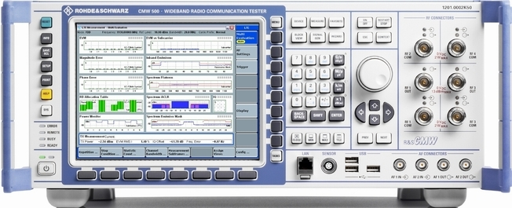

Front Panel Tour
The front panel of the R&S CMW with display consists of a VGA display with softkey and hotkey areas, utility keys to the left, hardkeys to the right and the connectors.
In the following sections, you can find brief explanations of the controls and connectors on the front panel.

Soft-front panel When using a remote desktop connection or an external monitor, a soft-front panel is available. See also "Using the Soft-Front Panel and Keyboard Shortcuts". |
Contents